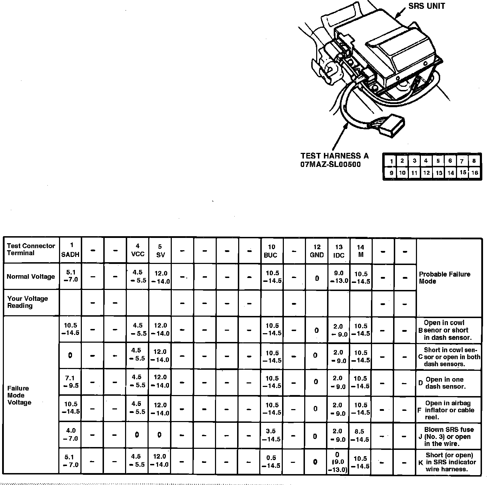

SRS Indicator Light Doesn't Go Off
Refer to Air Bags and Seat Belts/Air Bags (Supplemental Restraint Systems)/Locations/Connectors for component and connector locations and SCHEMATIC DIAGRAMS/ELECTRICAL AND ELECTRONIC DIAGRAMS/TEST HARNESS CONNECTORS for test harness attachments.Fig. 26 Voltage Specifications:

1. Connect test harness A to SRS, Fig. 26.
2. Ensure battery voltage is about 12 volts, then turn ignition switch On. Less than 12 volts may cause false readings.
3. Do not disconnect airbag(s) from circuit when checking SRS unit voltages.
4. Record voltage readings for each terminal, compare with voltage ranges, Fig. 26, if all the failure mode ranges in any row are circled, then refer to failure mode tests.
5. If you did not circle all of the ranges across any row, replace SRS control unit with known good unit and retest.
6. If readings are now normal, replace SRS.
7. If readings are not normal, but do not fit within a complete row of failure modes ranges, check condition of SRS connector terminal.